Lekion 2 handlade om….
| Sjölagen (1994:1009) | Övergripande/Ekonomisk | Befälhavarens ansvar 6 kap. §1 och §14 |
| Fartygssäkerhetslagen (2003:364) | Säkerhet | Säkerhetsorganisation (SMS, kap. 3. Arbetsmiljö, 4 kap: AML, ansvar, minderåriga, skyddsombud, 5 kap §1: Tillsyn) |
| Sjömanslagen (1973:282) | Arbetsvillkor, sjömans rättigheter, disciplinärenden | §9 och §11 frånträde, §18–28 franskiljande och fartygsnämnd, §45–48 fartygsarbete |
| Lagen om vilotid för sjömän (1998:958) | Vilotid | §1–7 vilotidskrav, §9–10 krav på arbetsordning |
| ISM-koden (SOLAS Chapter IX) | Herald of Free Enterprise | Ökad säkerhet genom införlivande av Safety Management Systems (ansvar, procedurer, riskhantering, auditering, rapportering/lärande) | EG förordning 336/2006 |
| MLC – Maritime Labour Convention (2006) | Sammanslagning av olika tidigare konventioner samt etablera modernare “minsta” krav | Att reglera arbetsvillkor, anställningsvillkor, bostadsutrymmen ombord, mat ombord, sjukvård ombord mm. | TSFS 2013:68 |
AML. 3 Kap. §2-§2a: Vad innebär dessa två paragrafer i praktiken?
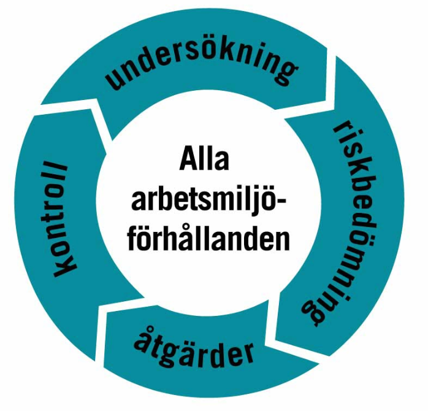
I par om två: Skriv ner så många faror för människors hälsa ni kan komma på i arbetsmiljön ombord på ett fartyg.
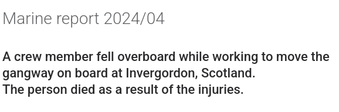
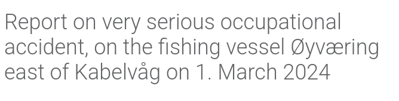
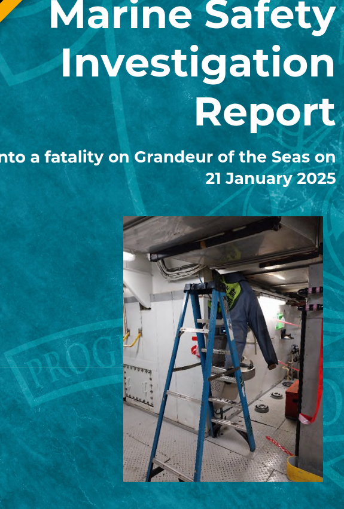
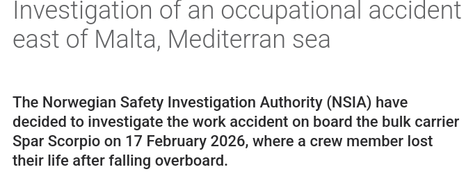
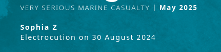
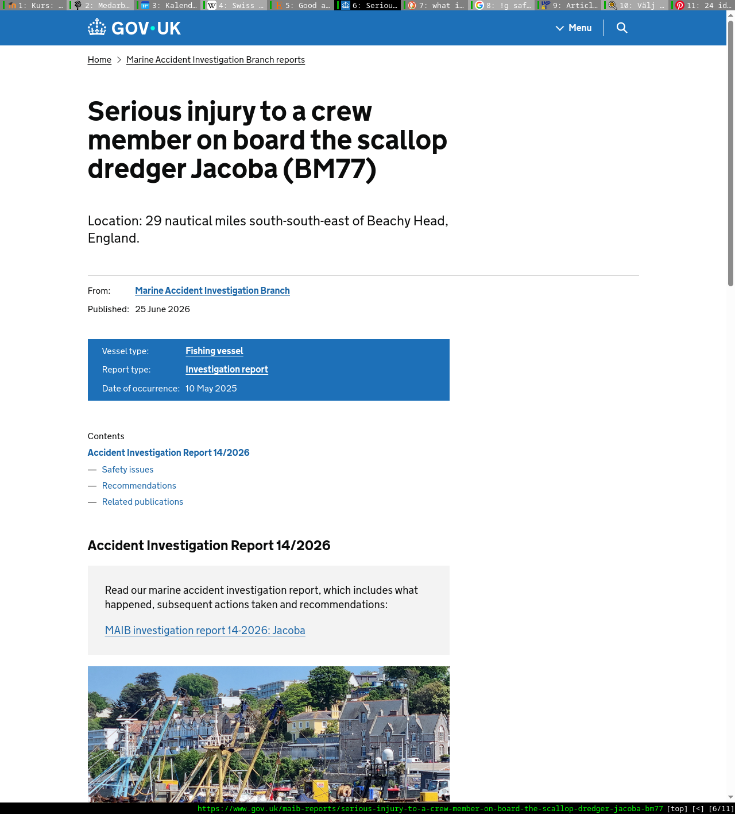
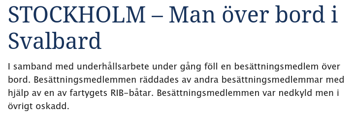
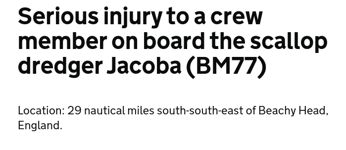
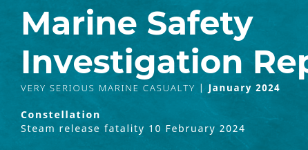
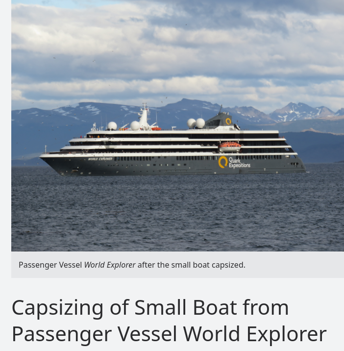
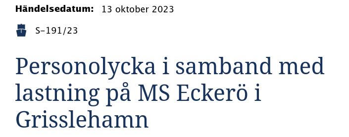
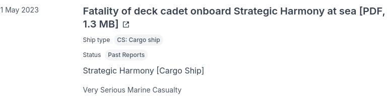
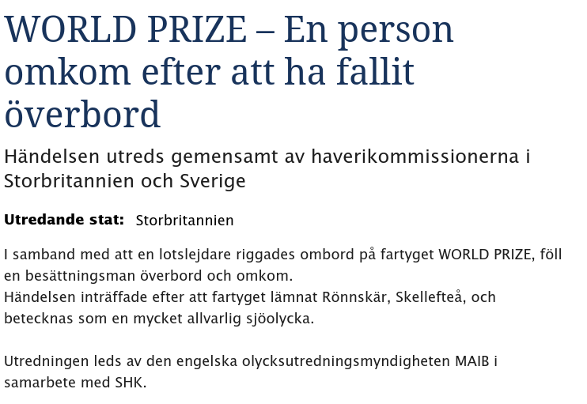
Very serious casualty: falling from height during inspection of water ballast tank
What happened?
On board a 37,000 gt containership whilst at sea, the chief officer entered into a water ballast tank for a routine inspection. Before the entry, he measured the tank’s atmosphere. He descended through the open manhole into the darkened tank, holding the lit torch in one hand. The bosun stood at the tank access monitoring the chief officer’s progress and an AB stood behind the bosun. The chief officer stopped at the fifth or sixth rung of the vertical ladder, almost level with a transverse stringer through which the ladder continued. He took another reading from the gas analyser and informed the bosun that the oxygen level was between 20.8 per cent and 20.9 per cent.
The chief officer then stepped to his left onto the stringer. At the same time, the bosun stepped back from the access and started talking to the AB. A few seconds later, there was a loud crashing sound in the tank. The bosun illuminated the tank with his torch and saw the chief officer lying at the bottom of the tank. The officer was recovered and air-lifted to the hospital for medical treatment, but was declared dead before arrival. As the chief officer stepped onto the stringer moments before he fell, it is almost certain that he fell off its un-guarded edge, possibly as a result of slipping on the sludgy coating while holding his torch in one hand and the gas analyser in the other.
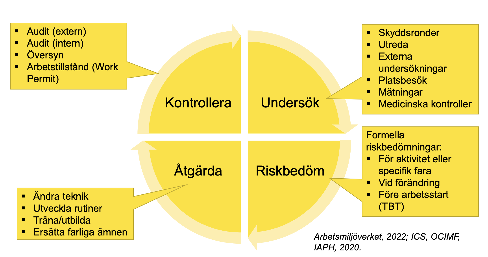
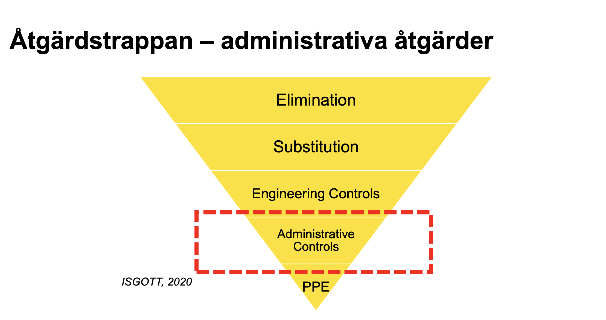
“A permit to work system is a formal written system that controls certain types of work…”
Very serious casualty: falling from height during inspection of water ballast tank
Why did it happen?
The precautions taken by the Chief Officer before entry into the tank fell significantly short of the requirements of the vessel’s procedures, the expectations of the vessel’s managers, and industry best practice.
The chief officer did not follow the permit to work system on board for entering into enclosed spaces.
The danger of falling during tank inspections had not been recognized or considered as no permits to work aloft were issued for tank entries on board.
What can we learn?
Ni ska utföra ett av följande:
Hur kan ni i praktiken lösa en isolation?
Mål med veckan
Inlämningsuppgift 1: Deadline Torsdag 10/9